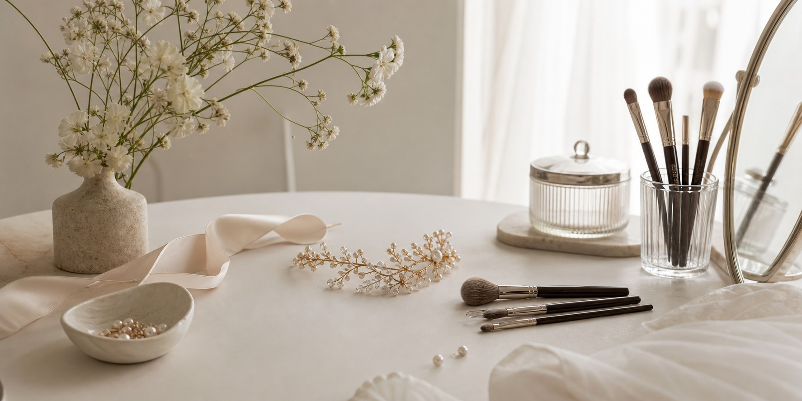

眉型不對稱
希望透過眉型整理，讓左右眉更協調、五官更有精神。

Suitable
希望透過眉型整理，讓左右眉更協調、五官更有精神。
平常畫眉需要花很多時間，希望有自然底色與眉型參考。
不想要厚重或明顯色塊，希望眉色柔和、修復後耐看。
Design Focus
眉毛會影響整體精神感，但自然霧眉不只是把眉毛補滿。Penny Studio 會先觀察五官比例、眉眼距離、臉型線條與平常妝感，再與妳討論適合的眉峰、眉尾與顏色深淺。
Before Service
了解妳平常畫眉習慣、喜歡與不喜歡的眉型。
依五官、臉型與原生眉流確認調整方向。
正式操作前會先溝通眉型與顏色深淺。
完成後提供修復期與日常照護提醒。
男士霧眉重點在於整理精神感與眉型比例，而不是做出明顯妝感。可依臉型、眉流與工作生活習慣討論自然的調整方向。
Cases
桃園霧眉
修飾眉尾與眉峰，保留柔和表情。
南崁霧眉
依眉眼距離與臉型討論眉型方向。
男士霧眉
乾淨整理眉型，不做厚重妝感。
FAQ
請依現場照護提醒清潔與保養，避免摳抓、過度摩擦或使用不適合的保養品。
可以，操作前會先溝通眉型、顏色與整體方向，確認後才進行。
可以，男士霧眉會以自然、乾淨、提升精神感為主，避免過度妝感。
可依妳的日常妝感與偏好討論眉色深淺，Penny Studio 以自然耐看為主要方向。
可以準備喜歡或不喜歡的眉型照片，並告知近期皮膚狀況、保養習慣或特殊需求。
透過 LINE 傳送素顏眉照與喜歡的風格，我們會協助妳初步整理方向。